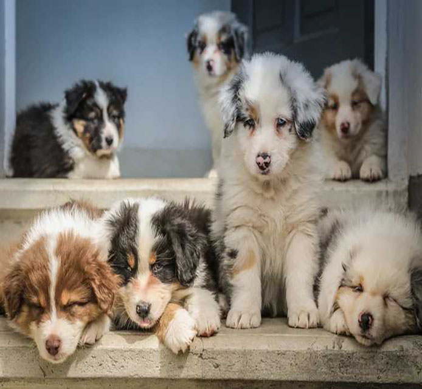
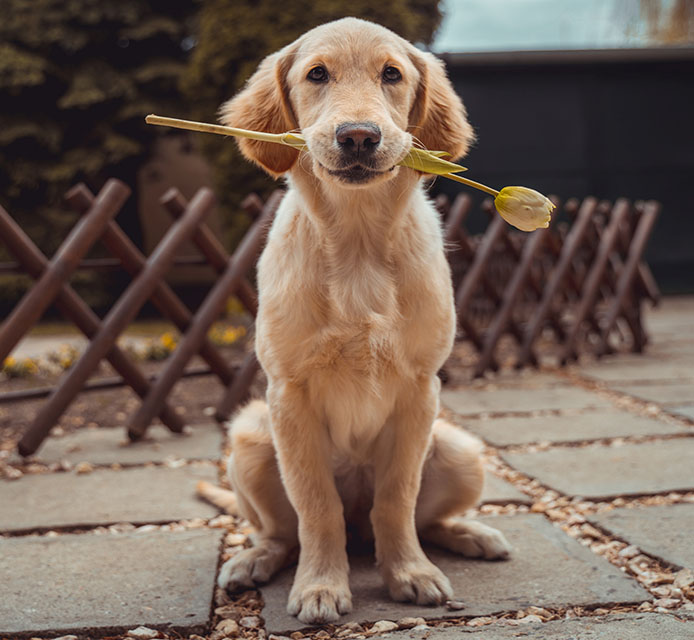

Our place for animal lovers and activists to stay up-to-date
Did you know? 70% of puppy mills operate illegally and about half of puppies born in mills survive their first 12 weeks. 0ver a half-million dogs are kept solely for breeding purposes.
The path a puppy takes from birth in the mill to its final owner is commonly referred to as the “puppy pipeline.” Investigations have uncovered abuse and neglect at many points in this pipeline, from improper transportation to unsanitary housing.
There are a great numbers of animal lovers showing active presence on Facebook, find the one that might interests you by checking them out in this article.